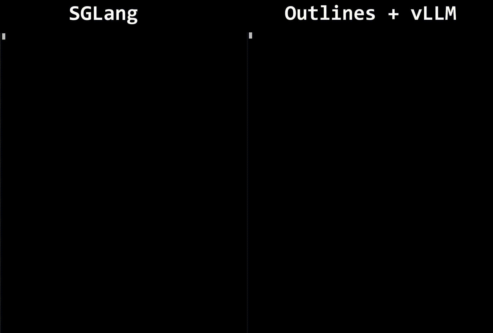
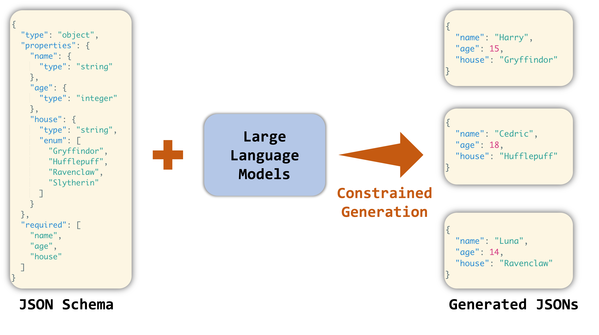
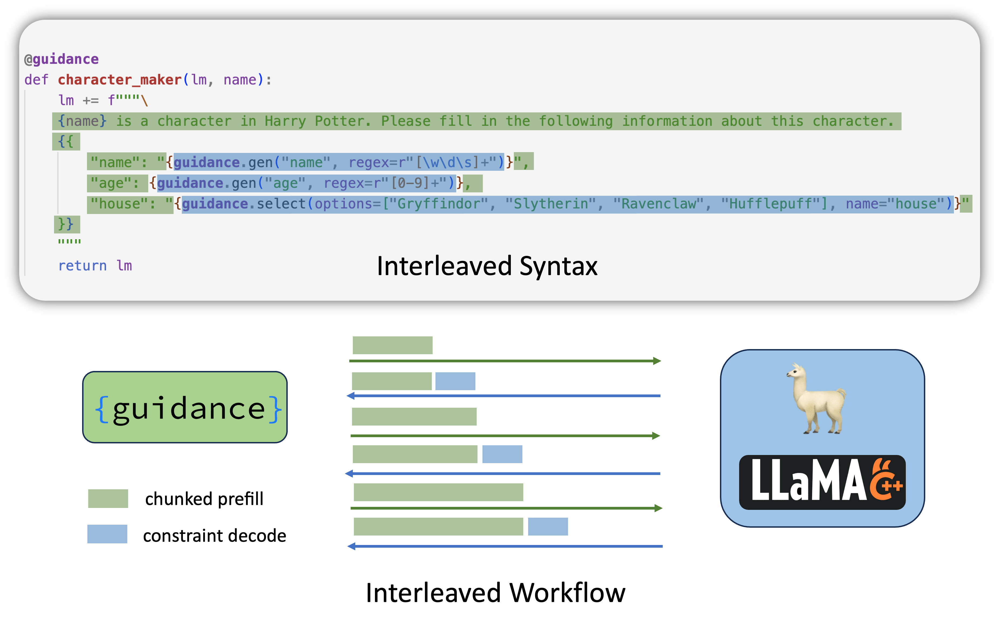
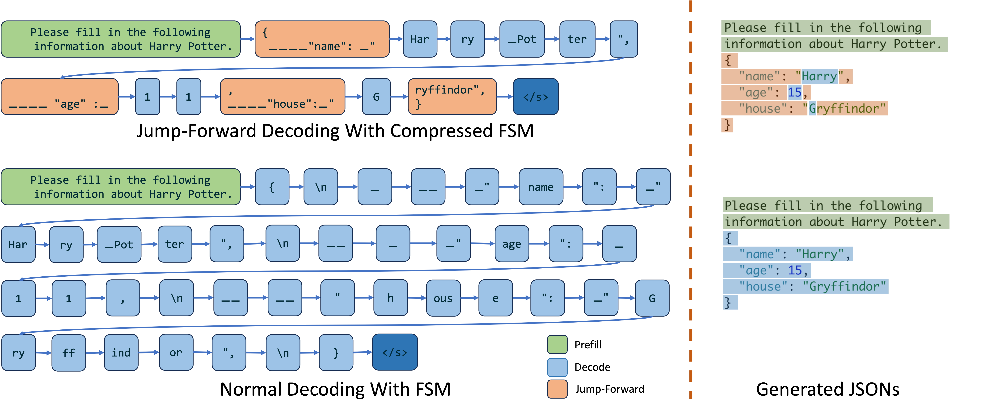
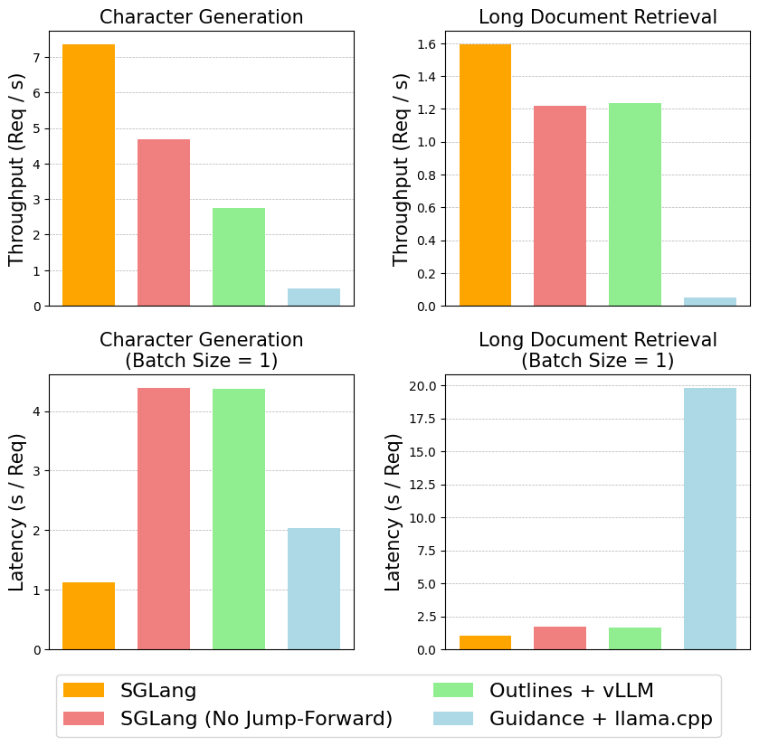
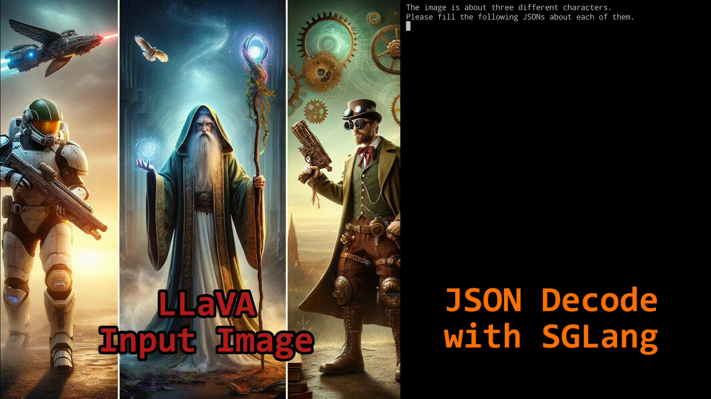

让 LLM 稳定输出符合特定 schema 的 JSON 或 YAML，是许多应用的关键需求。这里介绍一种显著加速此类约束解码的优化方案：它基于压缩有限状态机，兼容任意正则表达式，因此可适配任意 JSON 或 YAML schema。与 guidance + llama.cpp、outlines + vLLM 等既有系统相比，该方法可以把延迟最多降低 2 倍、吞吐最多提升 2.5 倍，甚至让约束解码比普通解码更快，现已在 SGLang 中开放试用。

JSON 是最重要的数据交换格式之一。让 LLM 始终输出合法 JSON，输出就能被稳定地结构化解析。OpenAI 正是看到了这一点，推出 JSON mode 来约束模型总是返回合法 JSON 对象；不过很多场景需要更细粒度的控制，确保生成的 JSON 对象符合特定 schema，例如下图中的约束生成示例。

对本地 LLM 而言，目前引导模型生成符合 schema 的 JSON 对象，主要有两类方法。
把 JSON schema 转成正则表达式，再基于正则构造有限状态机 FSM。解码时对 FSM 的每个状态计算允许的转移，找出可接受的下一批 token；跟踪当前状态并用 logit bias 过滤掉非法 token。这一方法的细节可参考 outlines 论文。
FSM 方法用通用正则表达低层规则，可覆盖多种语法，例如 JSON schema、IP 地址和邮箱。
局限在于：FSM 在 token 级构造，每步只能让状态前进一个 token，也就是一次只能解码一个 token，导致解码速度慢。
另一种思路不把整个 JSON schema 转成一个正则，而是采用交织式解码：把 schema 拆成若干部分，每部分要么是分块 prefill，要么是约束解码段，由推理系统交替执行。分块 prefill 一次前向就能处理多个 token，因此比逐 token 解码更快。
Guidance 为交织式解码提供了一套语法规则，后端使用 llama.cpp。

它的局限一是需要自定义语法，通用性和表达力不如单独的正则表达式。
局限二是 decode 段与分块 prefill 段可能相互冲突，分词边界很难妥善处理。
局限三是解释器与后端之间频繁通信，会带来额外开销。
跳跃式解码（jump-forward decoding）把两类方法的优点结合起来，算法基础是压缩有限状态机。
在被 schema 正则引导的解码过程中，走到特定节点时，往往能预测后面一定会出现的字符串。
以解码刚开始为例，根据正则就能预判接下来会出现的字符串是：
{
"name":这段固定前缀之后，才轮到真正需要解码的部分。
另一个例子：在填写角色的 house 属性时，LLM 一旦输出 G，就能确定下一个字符串是 ryffindor，从而一次补全为 Gryffindor。
这正是跳跃式解码的加速原理：检查给定正则的 FSM，找出所有单一转移边，把连续的边压缩成单一路径。与其逐 token 解码这些路径，不如直接 prefill（扩展）它们，一路跳到下一个分叉点。

SGLang 的 RadixAttention 机制让跳跃式解码的实现非常简单：执行一次跳跃时，直接终止当前请求并排入一个新请求，RadixAttention 和运行时高效的 extend 原语会自动复用前面 token 的 KV cache，避免重复计算。
实现约束解码时，字符与 token 之间的映射关系很复杂，分词边界始终是个棘手问题。
LLM 解码时可能更愿意把多个字符合并成一个 token（概率更高）。例如在 JSON 解码语境下输出 Hello 时，模型可能输出这样的 token 序列：
" He llo ",与其单独解码末尾的引号，模型更倾向于把引号与后面的逗号拼成一个出现频率更高的 token「",」。这种效应可能引发奇怪行为：如果正则设为「[\w\d\s]*」（不含末尾的「",」），模型想用「",」收尾却不被允许，就可能陷入无休止解码。
此外，跳跃式解码时，对跳过的部分采用不同的分词策略，会影响后续 token 的 logit 分布；直接把分词后的跳跃段追加到当前 token 序列，可能得到意外结果。
针对这些问题，作者提出以下对策：
一是在跳跃阶段实现重新分词机制：以字符串而非 token 的形式追加内容，再对整个文本重新分词。这能解决大部分分词问题，计算开销仅增加约 4%。
二是尽量用一条完整正则引导整个解码过程，而不是拼接多条正则。这样 FSM 和 LLM 都清楚完整解码路径，能最大限度减少边界问题。
跳跃式解码在两个任务上做了评测：
任务一是根据简短 prompt 生成角色的 JSON 数据。
任务二是从长文档中提取城市信息，并以 JSON 格式输出。
测试使用 llama-7B、NVIDIA A10 GPU（24GB），对比 vllm v0.2.7、guidance v0.1.0、outlines v0.2.5 与 llama.cpp v0.2.38（Python binding）。下图展示各系统在最大支持 batch size 下的吞吐，以及 batch size 为 1 时的延迟：

结果显示，采用该解码算法的 SGLang 显著优于其他系统，延迟最多降低 2 倍、吞吐最多提升 2.5 倍。在角色生成任务中，即使是不带跳跃式解码的 SGLang，吞吐也高于 Outlines + vLLM，作者推测这与 Outlines 自身存在额外开销有关。
Boson.ai 已试用该功能约两周，并把它投入生产场景，因为它能保证响应稳定，同时解码吞吐更高。
另一位用户则借助视觉语言模型 LLaVA，用该功能从图像中提取结构化信息。

目前该功能已在 SGLang 中开放试用，benchmark 代码也已公开。压缩 FSM 的实现建立在 outlines 开源 FSM 实现之上，感谢 outlines 的贡献。
参考：https://www.lmsys.org/blog/2024-02-05-compressed-fsm/